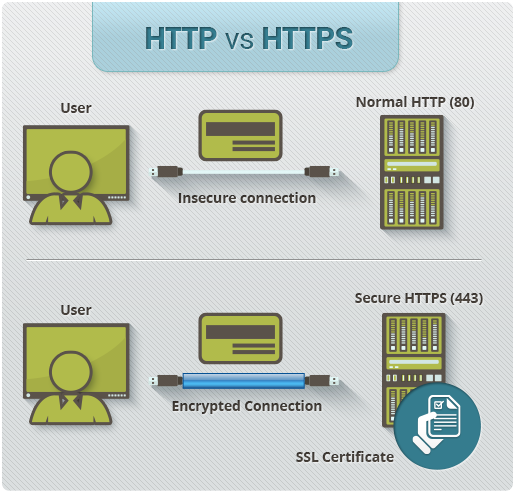

Networking
class: center, middle .title[ Front-end training # Networking ] --- # What it is all about? <p>Construction, design, and use of a network.</p> <p>Including the physical (cabling, hub, bridge, switch, router, and so forth), the selection and use of telecommunication protocol and computer software for using and managing the network.</p> <figure style="text-align: center"> <img src="images/networking.jpg" width="400" height="450" style=""/> </figure> --- class: center, top # Client/server model of communication <p>Client/server is a program relationship in which one program (the client) requests a service or resource from another program (the server). </p> <figure style="text-align: center"> <img src="images/Client-server-model.svg.png" width="800" height="400" style=""/> </figure> --- class: left, top # Web <p><i style="font-size: 14px"> Web inventor Tim Berners-Lee helped found, the World Wide Web Consortium (W3C): "The World Wide Web is the universe of network-accessible information, an embodiment of human knowledge."</i> </p> <h3 style="margin-top: 100px">Main components </h3> <p ><b style="color: #872F25; font-size: 22px;"> URL</b> is an acronym that stands for Uniform Resource Locator and is a reference (an address) to a resource on the Internet.</p> <p><b style="color: #872F25; font-size: 22px;"> HTTP</b> HyperText Transfer Protocol. HTTP is the underlying protocol used by the World Wide Web and this protocol defines how messages are formatted and transmitted, and what actions Web servers and browsers should take in response to various commands.</p> <p><b style="color: #872F25; font-size: 22px;"> HTML</b>(HyperText Markup Language) is a descriptive language that specifies webpage structure.</p> --- class: center, top # OSI Model <p>Open System Interconnection (OSI) model defines a networking framework to implement protocols in seven layers. </p> <figure style="text-align: center"> </figure> --- class: center, top # TCP ###Transmission Control Protocol <figure style="text-align: center"> </figure> --- class: left, top # IP Internet Protocol <p> Protocol by which data is sent from one computer to another on the Internet</p> <p>Each computer (known as a host) on the Internet has at least one IP address that uniquely identifies it from all other computers on the Internet. </p> <ul> <li><b style="color: #872F25; font-size: 22px;"> dynamic</b> is an IP address that dynamically assigned to your computer each time your computer (or router) is rebooted</li> <li><b style="color: #872F25; font-size: 22px;"> static </b> does not change even if your computer reboots</li> <li><b style="color: #872F25; font-size: 22px;">public</b> IP address that can be accessed over the Internet</li> <li><b style="color: #872F25; font-size: 22px;">private</b> for private networks</li> </ul> <h3 style="margin-top: 70px; text-align: left">IP address example:</h3> <figure style="text-align: center;" > </figure> --- class: left, top ## IPv4 <span style="color: #000;font-size: 20px;font-weight: bold">32-bit address (over 4 billion addresses)</span> <figure style="text-align: center"> </figure> ## IPv6 (IPng ) <span style="color: #000;font-size: 20px;font-weight: bold">128-bit IP address</span> <figure style="text-align: center"> </figure> --- class: left, top # Application layer <protocols></protocols> - HTTP Hypertext Transfer Protocol - DNS Domain Name System - DHCP Dynamic Host Configuration Protocol - SMTP Simple Mail Transfer Protocol - POP3 Post Office Protocol - Telnet terminal network - SSH Secure Shell cryptographic network protocol - FTP File Transfer Protocol - TFTP Trivial File Transfer Protocol --- class: left, top # DNS <p>service that translates domain names into IP addresses</p> <figure style="text-align: center"> </figure> --- class: left, top # HTTP <p>Set of rules for transferring files (text, graphic images, sound, video, and other multimedia files) on the World Wide Web </p> <figure style="text-align: center"> <img src="images/HTTP_request.png" width="600" height="300" style=""/> </figure> --- class: left, top # HTTP Methods <p>Two commonly used methods for a request-response between a client and server</p> <p> ##GET - Requests data from a specified resource ##POST - Submits data to be processed to a specified resource <hr> </p> ### Other HTTP Request Methods - <b style="color: #872F25; font-size: 22px;">HEAD</b> Same as GET but returns only HTTP headers and no document body - <b style="color: #872F25; font-size: 22px;">PUT</b> Uploads a representation of the specified URI - <b style="color: #872F25; font-size: 22px;">DELETE</b> Deletes the specified resource - <b style="color: #872F25; font-size: 22px;">OPTIONS</b> Returns the HTTP methods that the server supports - <b style="color: #872F25; font-size: 22px;">CONNECT</b> Converts the request connection to a transparent TCP/IP tunnel --- class: left, top # HTTP Status Codes - <b style="color: #872F25; font-size: 22px;">1xx</b> Informational - <b style="color: #872F25; font-size: 22px;">2xx</b> Success 200 OK - <b style="color: #872F25; font-size: 22px;">3xx</b> Redirection - <b style="color: #872F25; font-size: 22px;">4xx</b> Client Error 400 Bad Request 401 Unauthorized 402 Payment Required 403 Forbidden 404 Not Found - <b style="color: #872F25; font-size: 22px;">5xx</b> Server Error 500 Internal Server Error --- class: center, top # HTTPS (HyperText Transfer Protocol Secure) <p>HTTPS encrypts and decrypts user page requests as well as the pages that are returned by the Web server.</p> <figure style="text-align: center">  </figure> --- class: left, top # HTTP 2.0 <p>http 2.0 let browsers make multiple requests to web servers via a single connection. based on a custom version of the protocol created by Google named SPDY </p> - is binary, instead of textual - is fully multiplexed, instead of ordered and blocking - can therefore use one connection for parallelism - uses header compression to reduce overhead - allows servers to “push” responses proactively into client caches <hr> ### Timeline <figure style="text-align: center"> </figure> --- class: center, top # REST (Representational state transfer) - <b style="color: #872F25; font-size: 22px;">Client–server</b> – The client handles the front end the server handles the backend and can both be replaced independently of each other. - <b style="color: #872F25; font-size: 22px;">Stateless</b> – No client data is stored on the server between requests and session state is stored on the client. - <b style="color: #872F25; font-size: 22px;">Cacheable</b> – Clients can cache response (just like browsers caching static elements of a web page) to improve performance. --- class: center, top # CRUD | HTTP Verb | CRUD | Entire Collection (e.g. /customers) | Specific Item (e.g. /customers/{id}) | |---|---|---|---|---| |POST | Create | 201 (Created), 'Location' header with link to /customers/{id} containing new ID. | 404 (Not Found), 409 (Conflict) if resource already exists.. | | GET | Read | 200 (OK), list of customers. Use pagination, sorting and filtering to navigate big lists. | 200 (OK), single customer. 404 (Not Found), if ID not found or invalid. | | PUT | Update/Replace | 404 (Not Found), unless you want to update/replace every resource in the entire collection. | 200 (OK) or 204 (No Content). 404 (Not Found), if ID not found or invalid. | | DELETE | Delete | 404 (Not Found), unless you want to delete the whole collection—not often desirable. | 200 (OK). 404 (Not Found), if ID not found or invalid. | --- class: left, top # Node js <figure style="text-align: center"> <img src="images/node-js.png" width="800" height="500" style=""/> </figure> --- ### Non-blocking or Asynchronous I/O ``` // take order for table 1 and wait... var order1 = orderBlocking(['Coke', 'Iced Tea']); // once order is ready, take order back to table. serveOrder(order1); // once order is delivered, move on to another table. ``` ``` // take order for table 1 and move on... orderNonBlocking(['Coke', 'Iced Tea'], function(drinks){ return serveOrder(drinks); }); ``` --- ### Modules - Core Modules (http, fs, url) - User Defined Modules ``` // Core module const http = require('http'); // User module const customModule = require('./folder1/folder2/folder3/main.js'); ``` ### Export module ``` module.exports = { sayHello: function() { return 'Hello'; }, sayBy: function() { return 'By'; } }; ``` --- ### Callbacks ``` setTimeout(function() { console.log("world"); }, 2000) console.log("hello"); ``` --- # Event-Driven Programming ``` const fs = require('fs'); fs.readFile('example.txt', function (err, data) { if (err) { console.log(err); return; } console.log(data); }); console.log('end'); ``` --- class: left, top # npm (node package manager) <p>npm makes it easy for JavaScript developers to share and reuse code, and it makes it easy to update the code that you're sharing.</p> <figure style="text-align: center; margin-top: 150px;"> </figure> --- # Resources - https://github.com/workshopper/learnyounode - https://habrahabr.ru/post/307252/ - https://www.digitalocean.com/community/tutorials/an-introduction-to-networking-terminology-interfaces-and-protocols